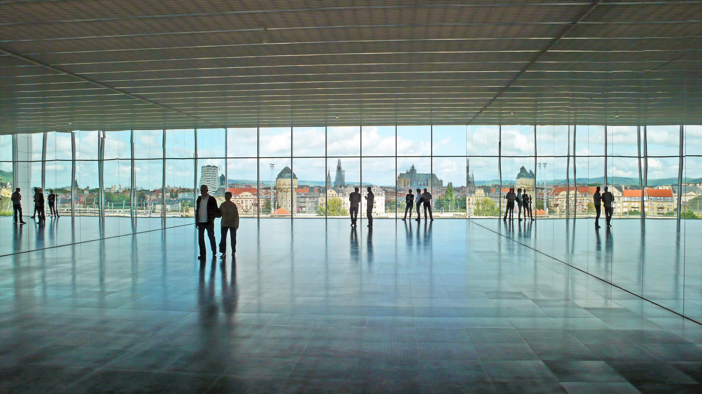

Потолок под ваше пространство
FORMA — студия параметрического проектирования. Задайте размеры потолка, подберите рисунок ячеек и посмотрите результат в 3D.
Открыть конфигуратор
FORMA — студия параметрического проектирования. Задайте размеры потолка, подберите рисунок ячеек и посмотрите результат в 3D.
Открыть конфигуратор